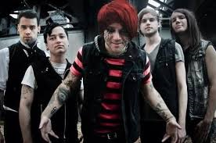

I must accept these consequences for my actions
when all I did was what the world told me I should do
And do anything for my dreams, if only i knew
the cost of my dreams, AKA, you.. would be you
I'm dead now!
The nightmare
is slowly taking over
All that's happened
It is enabling him
to take exactly what he wants
until he gets what he desires,
we'll be at his whim
My inner demon, he is screamin' at me, "Take her now!
This is your only chance, won't get another, don't let me down.
Don't fucking whine.
the deed is done you'll be just fine.
So you want true romance?
throw the dice, take a chance."
Why won't you let me in, just let me in!
We'll masquerade this awkward phase that we're stuck in.
If you accept me and forever be by my side
Remember what I said? Every day's a new sunrise
So let's just act pretend like this never happened
I'm your arcane guardian
Just let me in
Source:zlyrics
